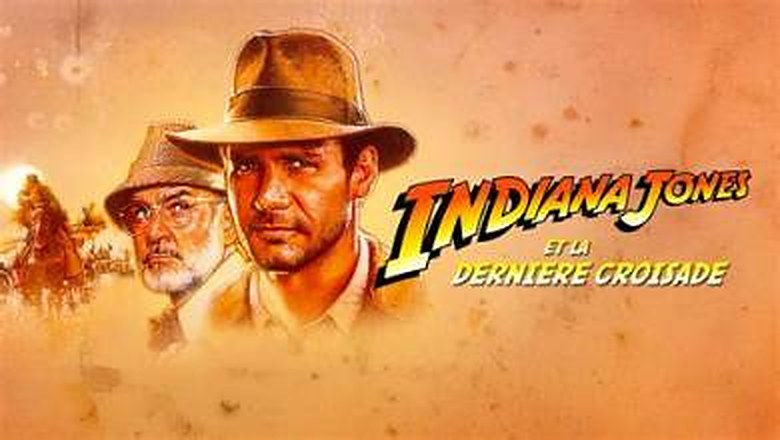
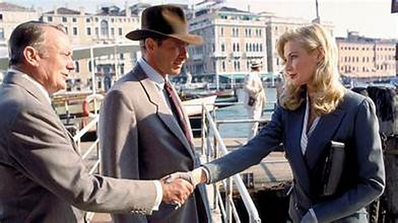

On referme la trilogie là où, pour moi, tout avait commencé.
J'avais huit ans. C'était le soir du réveillon, chez mon arrière-grand-mère. Dans la salle à manger, mes parents, mes grands-parents et mon arrière-grand-mère fêtaient la nouvelle année. Les verres, les rires, les conversations qui couvraient tout. Moi, j'étais devant la télévision, seul, et sur TF1 passait Indiana Jones et la Dernière Croisade.
Je ne savais rien de ce héros. Je ne savais pas qu'il avait déjà vécu deux aventures avant celle-là. Pour moi, Indiana Jones naissait ce soir-là, sous mes yeux.
Et puis il y a eu les épreuves. Au bout du chemin, le Graal. Avant lui, des pièges anciens, posés là depuis des siècles. Un homme s'avance trop vite dans un tunnel, sans comprendre l'énigme. Un sifflement, une lame. Et sa tête qui tombe.
J'ai sursauté. Dans la pièce d'à côté, personne n'avait rien vu. La fête continuait. Mais moi, je venais de comprendre qu'un film pouvait me saisir comme jamais.
C'était le dernier film de la trilogie. C'était mon premier Indiana Jones.
Ce soir, on part à la recherche du Graal.

Indiana Jones et la Dernière Croisade — visuel, 1989
Indiana Jones et la Dernière Croisade.
Réalisé par Steven Spielberg. Avec Harrison Ford, Sean Connery, Denholm Elliott, Alison Doody, John Rhys-Davies et Julian Glover. River Phoenix joue Indiana Jones adolescent.
Produit par Lucasfilm pour Paramount, d'après une histoire de George Lucas et Menno Meyjes, sur un scénario de Jeffrey Boam. La musique est encore signée John Williams. Le film sort aux États-Unis en mai 1989, cinq ans après Le Temple maudit. C'est le plus gros succès de l'année dans le monde.
Il remporte l'Oscar du meilleur montage des effets sonores.
1938. Le professeur Henry Jones, spécialiste du Graal, a disparu alors qu'il cherchait la coupe du Christ. Les nazis veulent s'en emparer, persuadés qu'elle rend immortel. Son fils, Indiana, part sur ses traces, de Venise à l'Autriche, de Berlin aux déserts du Proche-Orient.
Après la noirceur du Temple maudit, Spielberg et Lucas reviennent à l'esprit des Aventuriers de l'arche perdue : les nazis, l'humour, l'archéologie biblique. Mais ils ajoutent ce qui manquait au héros : un père.
Le chapeau, le fouet, et Sean Connery. La dernière croisade d'Indiana Jones est aussi la plus tendre.
Lucas et Spielberg se sont promis trois films. Après Le Temple maudit, jugé trop sombre jusque par ses auteurs, Spielberg veut une conclusion plus lumineuse. Il le dira lui-même : ce troisième film est en partie une manière de s'excuser du deuxième.
Le sujet met du temps à se trouver. Lucas propose d'abord un château hanté en Écosse, que Spielberg refuse, trop proche de Poltergeist, qu'il avait produit. Une piste africaine, autour du Roi Singe, est abandonnée. Lucas revient alors à une vieille idée : la quête du Graal. Spielberg trouve le sujet trop abstrait, jusqu'à ce qu'il ait une idée : que la véritable quête soit celle d'un fils qui retrouve son père.
Pour jouer le père d'Indiana Jones, il ne voit qu'un acteur : Sean Connery. Spielberg, qui rêvait de réaliser un James Bond avant de créer Indy, offre ainsi au héros le premier des James Bond comme père. Connery n'a que douze ans de plus qu'Harrison Ford, mais il impose un personnage savant, distrait et têtu, qui tient tête à son fils. Il participe aussi à l'écriture de plusieurs répliques.
Le scénario final est signé Jeffrey Boam. Le film s'ouvre sur une jeunesse d'Indiana Jones, jouée par River Phoenix, qui avait déjà incarné le fils d'Harrison Ford dans Mosquito Coast. En quelques minutes, on y découvre l'origine du chapeau, du fouet, de la cicatrice et de la peur des serpents.
Le tournage parcourt le monde : les canyons de l'Utah pour l'ouverture, les canaux de Venise, le désert d'Almería en Espagne pour la poursuite du char, et la cité de Pétra, en Jordanie, dont la façade taillée dans la roche devient l'entrée du temple du Graal. Les décors intérieurs sont construits aux studios d'Elstree, en Angleterre.
Pour les catacombes de Venise, l'équipe élève des milliers de rats. Le char d'assaut de la grande poursuite est un vrai véhicule, construit pour le film sur une base d'engin de chantier.

Arrivée à Venise : Marcus Brody, Indy et Elsa Schneider
Utah, 1912.
Un jeune scout du nom d'Indiana Jones surprend des pilleurs de trésors dans une grotte. Il leur arrache une croix en or et s'enfuit à travers le désert, puis à bord d'un train de cirque. Ce jour-là, il perd la bataille, mais il découvre sa vocation.
1938. Indiana Jones est devenu professeur d'archéologie. Un riche collectionneur, Walter Donovan, lui apprend qu'une expédition cherchait le Graal, la coupe du Christ qui donnerait la vie éternelle. Son chef a disparu à Venise. C'est le père d'Indiana : le professeur Henry Jones, qui a consacré toute sa vie à cette quête.
Le père et le fils ne se parlent plus depuis des années. Mais Indy a reçu par la poste le carnet de son père, rempli de notes, de dessins et d'énigmes. Il part pour Venise avec son vieil ami Marcus Brody.
Là-bas, il retrouve le docteur Elsa Schneider, l'archéologue qui travaillait avec son père. Sous une bibliothèque, dans des catacombes envahies par les rats, ils trouvent la tombe d'un chevalier qui a gardé le secret du Graal.
La piste les entraîne vers un château autrichien perdu dans la brume, où les nazis les ont déjà devancés.
Un père et un fils qui ne se comprennent pas, un carnet couvert d'énigmes, et une course vers l'objet le plus convoité de l'histoire.
La Dernière Croisade est un film d'aventure qui raconte en secret une histoire de famille. Sous la course au Graal, c'est la quête d'un fils qui cherche, depuis l'enfance, le regard de son père.
Toute la force du film tient au duo Ford-Connery. Indiana Jones, le héros indestructible, redevient un petit garçon dès que son père entre dans la pièce. Henry Jones l'appelle « Junior », le corrige, ne le prend pas au sérieux. Le père est un savant distrait, plus à l'aise avec les livres qu'avec les gens. Le fils est un homme d'action qui a toujours manqué d'attention. Leurs disputes sont drôles, leurs silences touchants. Sean Connery, inattendu dans ce registre de comédie, donne au film une chaleur que les deux premiers n'avaient pas.
L'ouverture avec River Phoenix suit la même idée. En quelques minutes, Spielberg raconte la naissance du mythe, le chapeau, le fouet, la cicatrice, la peur des serpents, et surtout l'absence du père, trop absorbé par ses recherches pour voir ce que vit son fils. Tout le reste du film répond à cette scène.
Côté aventure, Spielberg retrouve la légèreté des Aventuriers. La poursuite en bateau dans les canaux de Venise, l'évasion en side-car, le zeppelin, l'avion : les morceaux de bravoure s'enchaînent avec humour. Le sommet reste l'attaque du char d'assaut dans le désert, une séquence d'action de plus de dix minutes, d'une précision et d'une énergie folles.
Puis viennent les épreuves du Graal, le cœur mystique du film. Trois pièges hérités des chevaliers, qui ne se franchissent ni par la force ni par l'intelligence seule, mais par l'humilité et la foi. Le premier, celui où un homme trop pressé perd la tête, en donne la règle : seul celui qui s'agenouille peut passer. Pour la première fois, Indiana Jones ne gagne pas en se battant, mais en comprenant.
On peut reprocher au film d'être plus sage, plus familial, de rejouer certaines recettes du premier volet. Les nazis sont parfois caricaturaux, et l'émerveillement remplace un peu la peur.
Mais c'est tout le sens de cette conclusion : après l'arche et le temple, le plus grand trésor d'Indiana Jones n'est pas une relique. C'est un père retrouvé.

Le père et le fils, en plein vol
Parce que c'est le film qui a réconcilié tout le monde avec Indiana Jones.
En 1989, le succès est mondial. La Dernière Croisade est le film qui rapporte le plus d'argent dans le monde cette année-là, devant même le Batman de Tim Burton. Après les controverses du Temple maudit, le public retrouve le héros qu'il aimait, plus drôle et plus humain que jamais. La critique suit.
Ensuite, le duo Ford-Connery est entré dans la légende. Leurs échanges sont devenus cultes : le « Junior » qui agace tant Indiana, la révélation de l'origine de son prénom, qui était celui du chien de la famille, ou les deux hommes ligotés dos à dos dans un château en flammes. Sean Connery est nommé au Golden Globe du meilleur second rôle, et beaucoup considèrent ce rôle comme l'un des plus attachants de sa carrière.
C'est aussi un film qui a fixé la légende du personnage. En racontant la jeunesse d'Indiana Jones, il a donné une origine à chaque détail de sa silhouette. Cette ouverture inspirera directement à George Lucas une série télévisée, Les Aventures du jeune Indiana Jones, lancée en 1992.
Et puis il y a la fin. Quatre cavaliers qui s'éloignent au galop vers le soleil couchant : l'image d'une trilogie qui se referme comme les westerns d'autrefois. Pendant presque vingt ans, jusqu'au retour du personnage en 2008, beaucoup ont considéré cette image comme la conclusion parfaite de l'aventure.
Enfin, La Dernière Croisade est devenu un film de famille, au sens propre. Rediffusé encore et encore à la télévision, souvent pendant les fêtes, il a été regardé par plusieurs générations, parents et enfants ensemble. Pour beaucoup, comme pour moi, ce fut le premier Indiana Jones.
Un film d'aventure sur un père et un fils, devenu celui que les familles regardent ensemble.
Parce que c'est le plus chaleureux des trois, et qu'il se revoit avec le même plaisir à tout âge.
Enfant, on le regarde pour l'aventure : les rats de Venise, la poursuite en side-car, le char d'assaut, les pièges du Graal. Adulte, on découvre un autre film. Une histoire de père et de fils, de reproches jamais formulés et de tendresse qui ne sait pas se dire. Avec les années, ce n'est plus seulement Indiana Jones qu'on regarde, c'est aussi Henry. Et on comprend mieux les deux.
Parce que Harrison Ford et Sean Connery forment l'un des plus beaux duos du cinéma d'aventure. Leur complicité, leur humour et leurs disputes donnent au film un charme qui n'a pas pris une ride.
Parce que l'ouverture avec River Phoenix est un petit film à elle seule : en quelques minutes, tout le mythe se met en place, avec une énergie et une inventivité folles.
Parce que la poursuite du char d'assaut reste l'une des plus grandes séquences d'action de Spielberg. Tout y est réel, physique, lisible, et il n'y a pas une seconde de trop.
Parce que les épreuves du Graal ont gardé leur mystère. Un tunnel, une énigme, une lame qui siffle. Ce sont des scènes qui impressionnent encore, et qui marquent pour longtemps quand on les découvre à huit ans.
Et parce que La Dernière Croisade est un film qui se partage. Il a été celui des réveillons, des fêtes et des soirées en famille. Le revoir, c'est retrouver un peu de ces moments.
Il y a des films qu'on découvre au bon moment, sans le savoir.
J'avais huit ans. C'était un soir de réveillon, chez mon arrière-grand-mère. Dans la pièce d'à côté, ma famille fêtait la nouvelle année. Moi, j'étais seul devant la télévision, et j'ai rencontré Indiana Jones. Le chapeau, le fouet, un père et un fils qui se disputaient, des pièges hérités des chevaliers, et cette lame qui siffle dans un tunnel. Je venais d'entrer dans l'aventure par la dernière porte.
Il m'a fallu des années pour remonter le fil : l'arche perdue, le temple maudit, puis le retour à ce Graal que j'avais vu en premier. Et c'est seulement en revoyant la trilogie dans l'ordre que j'ai compris ce que racontait vraiment La Dernière Croisade. Après toutes les reliques, tous les trésors et tous les dangers, Indiana Jones finit par trouver ce qu'il cherchait sans le savoir : la reconnaissance de son père.
Il y a peut-être un peu de ça dans mon souvenir. Ce soir-là, la famille était réunie, juste à côté. Les voix, les rires, les générations rassemblées autour d'une table. Et devant l'écran, un enfant qui découvrait qu'un film pouvait le marquer pour toujours.
La trilogie se referme. Quatre cavaliers s'éloignent vers le soleil couchant.
La cassette est dans le lecteur. On rembobine.
Titre original
Indiana Jones and the Last Crusade
Pays
États-Unis
Genre
Aventure / Action
Durée
127 min
Producteur
Lucasfilm · Paramount Pictures
Avec aussi
Denholm Elliott · Alison Doody · River Phoenix
Musique
John Williams
Fil conducteur
Trilogie Indiana Jones — Le père et le fils
SOMEDAY — TRILOGIE INDIANA JONES EP. 03